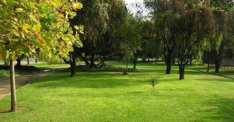

tinyAccordion是一款精巧的jQuery手风琴插件，它功能强大，实用，只需简单配置……
- 简单的配置
- 你不需要对她进行复杂的配置，只要写好简单的html结构，然后在手风琴结构的最外层div上调用该插件就可以了，css可以完全不用考虑，当然，你可以用css进行美化！
- 丰富的而又简洁的参数
- 你只需在调用插件的时候，传入任意个配置参数，就可以定制你的手风琴效果了 ，如整体宽高、控制条的宽度、初始显示指定项、滑动的触发方式、滑动速度、滑动效果、自动播放、播放速度……
- 完善的接口
- 它的接口完善，可以轻易与外部程序配合使用。如自动播放的启动/停止、播放下一项/上一项。并可以轻松获取到即将显示和即将隐藏的项。也可通过回调的方式在滑动开始和结束时调用指定函数，如制作一个过场动画。
- 细致的体验
- 完全可控的效果。只要你有任何需求，都可以在此基础上进行进一步加工美化。
- 完美的兼容性
- 兼容：IE6+、Firefox、Chrome、Safari、Opera以及iPad等移动设备。
效果演示
ps：该演示没有做IE兼容，若有不正常，不是插件的原因，推荐使用现代浏览器查看
1、自动播放以及通过鼠标悬停(hover)控制手风琴
2、初始显示指定项/通过点击来控制
-
one
-
two
-
three
-
four
-
five

3、使用回调函数来制作过场动画
-
tiger
-
butterfly
-
flower
4、通过提供的接口方法用代码控制播放、停止、向前、向后
-
红
-
橙
-
黄
-
绿
-
青
-
蓝
-
紫
prev start stop next